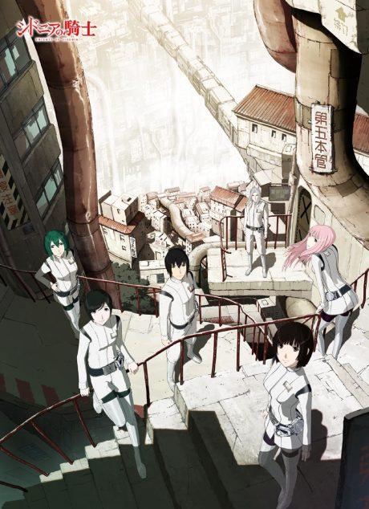
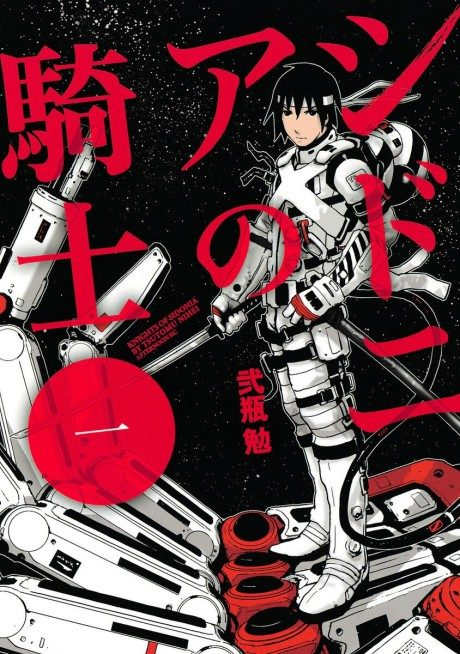

Anime
Manga2014 · Action, Fantasy, Mecha
Knights of Sidonia
シドニアの騎士
AniList7.3
Animeter—
2 seasons24 ep
MangaCh. 50
Anime finished. Where does the manga pick up?
Start at Chapter50
Battle for Planet Nine wraps up around chapter 42 and then skips and rearranges chapters 43-49, so start at chapter 50. Readers who want the cut scenes can read from chapter 43. The manga is finished at 78 chapters.
14978 end
Battle for Planet NineStart reading here